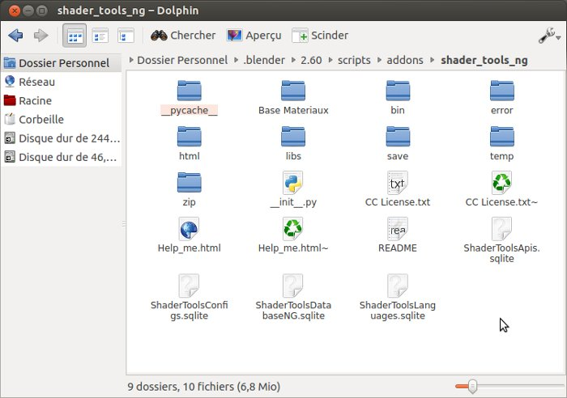

| Open addon folder : |
| This element allows you to access current ShaderTools directory. |
| Click on 'Utilities' into user interface then 'Open addon folder' : |

|
| A window appears allows you to explore folder of ShaderTools (INFORMATION : the default file browser for Linux users it's 'nautilus', you can edit him in 'Settings' utiliy. Here an example with 'dolphin') |
|  |